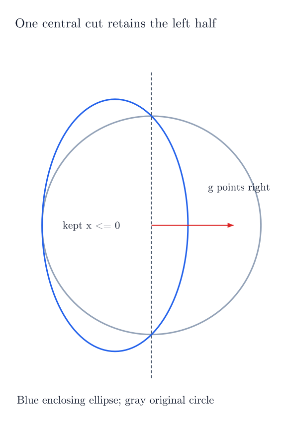
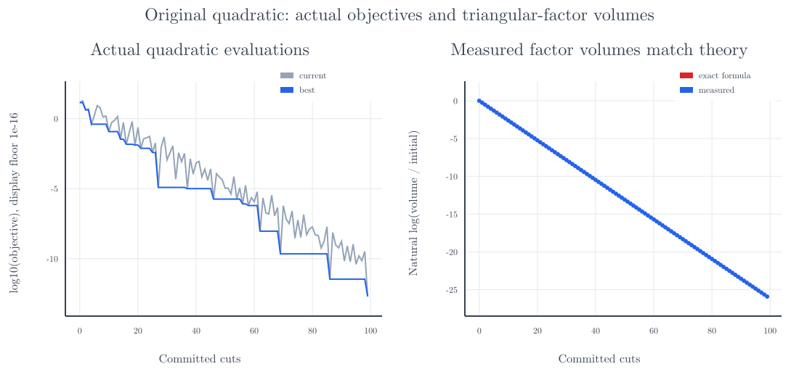
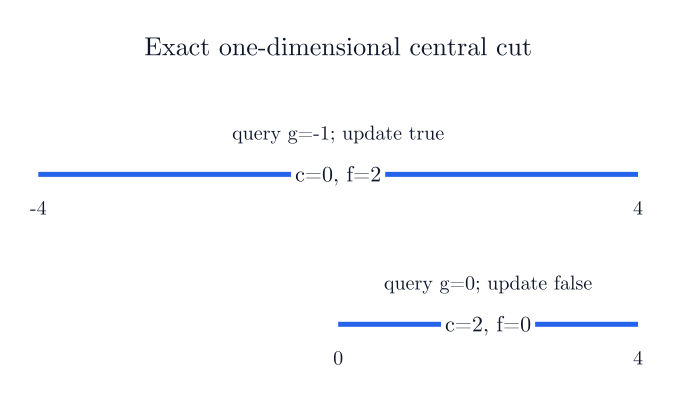
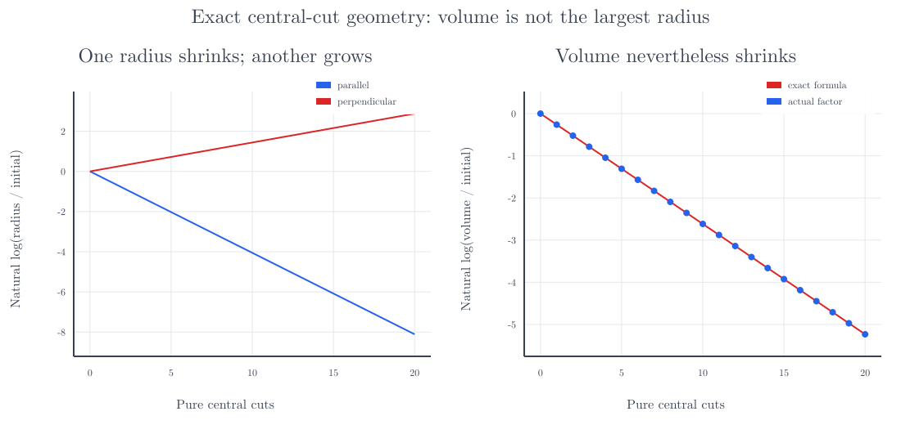
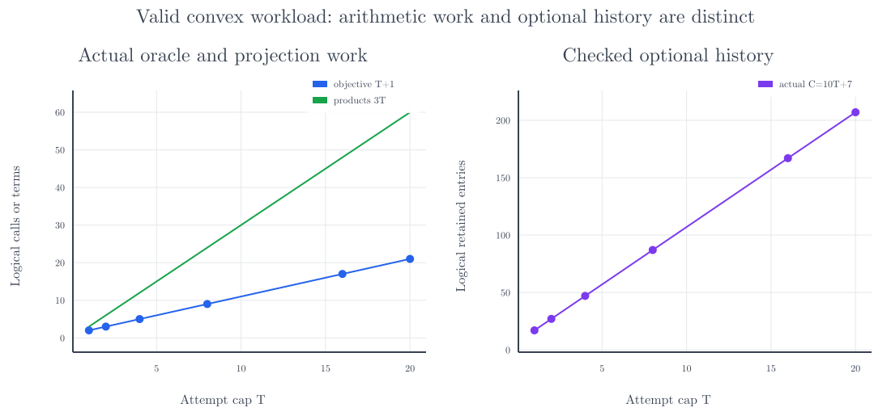

Ellipsoid Cuts: Geometry, Actual Oracles and Honest Stopping
Abstract
A convex subgradient determines a halfspace that retains a minimizer. The ellipsoid method encloses that half of the current ellipsoid in a new ellipsoid. We begin with a unit circle, derive the exact change in volume, and inspect the actual callback trajectory of the original weighted quadratic. Native C++ datamunge APIs keep the geometry in a positive triangular factor and distinguish an objective tolerance from an iteration limit or a rounded, stationary center. Shrinking volume alone does not imply that every axis or every center objective shrinks.
A unit circle and one central cut
Take c=(0,0), radius one and direction g=(1,0). The kept half is x<=0. Its enclosing ellipse has center (-1/3,0), horizontal radius 2/3 and vertical radius 2/sqrt(3). Its area ratio is 4/(3 sqrt(3)), about 0.7698. The vertical axis grows even on this first step. The diagram reads the actual geometry returned by the core; it does not implement another cut formula in the report.
#include <dm/dm.hpp>
int main(){
std::filesystem::create_directories("build");
const auto e=dm::algorithms::ellipsoid_ball({0,0},1);
const auto cut=dm::algorithms::ellipsoid_central_cut(e,{1,0});
std::print("Unit cut: center ({:.9f},{:.9f}); radii {:.9f}, {:.9f}; support {:.9f}.\n",cut.state.center[0],cut.state.center[1],cut.state.lower[0][0],cut.state.lower[1][1],cut.support_bound);
std::print("Measured area ratio {:.12f}; exact ratio {:.12f}.\n",std::exp(cut.log_volume_after-cut.log_volume_before),4/(3*std::sqrt(3.)));
dm::graphics::Diagram g(220,1100);
dm::graphics::DiagramStroke old;old.color={148,163,184};old.width=3;
dm::graphics::DiagramStroke next;next.color={37,99,235};next.width=3;
dm::graphics::DiagramStroke axis;axis.dashed=true;axis.color={71,85,105};
dm::graphics::DiagramStroke arrow;arrow.arrow=true;arrow.color={220,38,38};
g.path(dm::algorithms::ellipsoid_outline(e),old).path(dm::algorithms::ellipsoid_outline(cut.state),next)
.path({{0,-1.4},{0,1.4}},axis).path({{0,0},{.75,0}},arrow)
.label({-.55,0},"kept x <= 0",21).text({.8,.35},"g points right",21)
.text({-.33,-1.6},"Blue enclosing ellipse; gray original circle",22)
.text({-.33,1.85},"One central cut retains the left half",26).save_svg("build/ellipsoid_tiny.svg");
}Unit cut: center (-0.333333333,0.000000000); radii 0.666666667, 1.154700538; support 1.000000000. Measured area ratio 0.769800358920; exact ratio 0.769800358920.

Derive the cut and the conditional objective bound
Write the ellipsoid as E={c+Lu: |u|<=1}, where L is lower triangular with positive diagonal. Its mathematical shape matrix is P=LL^T. Suppose f is convex, g is a valid subgradient at c, and a minimizer x* is inside E. The subgradient inequality gives
Thus the central halfspace retains x*. For n>1, putting v=Pg/sqrt(g^TPg), the enclosing ellipsoid has
In one dimension, the update is interval bisection. The core computes u=LTg/||LTg|| and v=Lu, and updates a triangular factor of the new shape. It never needs to form P or square the support norm. A scaled projection and hypot-based norm avoid avoidable squaring underflow and overflow. Checked arithmetic still has finite limits.
For completeness, let b=2/(n+1), s[-1]=1 and s[j]=1-b sum(k<j) u[k]2. The lower factor B of I-buuT has B[j,j]=sqrt(s[j]/s[j-1]) and B[i,j]-b u[i]u[j]/sqrt(s[j-1]s[j]) for i>j. Multiplying L by this factor with row suffix sums costs O(n^2). Every new diagonal is a product of positive terms; subtracting nearly equal dense shape entries is avoided. The implementation uses extended intermediates and stores the resulting finite positive factor as doubles. This is numerical geometry, not an interval-arithmetic enclosure proof.
Cauchy-Schwarz supplies a conditional objective-gap bound:
The tolerance therefore has objective units. It is not a bound on the step or distance to x*. A zero subgradient certifies a global minimum for a valid convex oracle. The library cannot check convexity, the subgradient claim or the initial enclosure: those are caller assumptions. If an optimum is outside the initial ball, these guarantees do not apply.
Run the original weighted quadratic through the actual kernel
Use f(x,y)=(x-3)2+5(y+1)2 and its exact gradient. Its unique minimizer (3,-1), with value zero, lies in the initial radius-ten ball. We keep the original cap of 500 subgradient attempts and absolute tolerance 1e-10. The trace owns the actual objective values, queried gradients and committed factors from this same execution. No second recurrence is used to draw the plot. The best evaluated value is retained because a new center can have a larger objective than the preceding center.
#include <dm/dm.hpp>
int main(){
std::filesystem::create_directories("build");std::size_t fc=0,gc=0;
auto f=[&](const std::vector<double>& x){++fc;return (x[0]-3)*(x[0]-3)+5*(x[1]+1)*(x[1]+1);};
auto g=[&](const std::vector<double>& x){++gc;return std::vector<double>{2*(x[0]-3),10*(x[1]+1)};};
const auto t=dm::algorithms::ellipsoid_minimize_trace(f,g,{0,0},10,500,1e-10);
const auto& o=t.outcome;
if(o.stop!=dm::algorithms::EllipsoidStop::support_tolerance||o.result.value>1e-10||fc!=o.work.objective_calls||gc!=o.work.subgradient_calls)throw std::runtime_error("quadratic verification failed");
std::print("Original quadratic: best ({:.12f},{:.12f}); value {:.12g}; last support {:.12g}; tolerance stop {}.\n",o.result.x[0],o.result.x[1],o.result.value,o.last_support_bound,o.stop==dm::algorithms::EllipsoidStop::support_tolerance);
std::print("Actual calls: objective {}; subgradient {}; committed cuts {}; captured entries {}.\n\n",fc,gc,o.work.updates,t.captured_entries);
std::print("| committed cut | current objective | best objective | log(volume / initial) |\n| ---: | ---: | ---: | ---: |\n");
std::vector<double> x,current,best,volume,theory;std::size_t rises=0;
for(std::size_t i=0;i<t.samples.size();++i){const auto& s=t.samples[i];x.push_back(i);current.push_back(std::log10(std::max(s.objective,1e-16)));best.push_back(std::log10(std::max(s.best_value,1e-16)));volume.push_back(s.log_volume-t.samples[0].log_volume);theory.push_back(i*dm::algorithms::ellipsoid_log_volume_ratio(2));
if(i&&s.objective>t.samples[i-1].objective)++rises;
if(i%20==0||i+1==t.samples.size())std::print("| {} | {:.12g} | {:.12g} | {:.9f} |\n",i,s.objective,s.best_value,volume.back());}
std::print("\nCenter objective increases on {} committed cuts.\n",rises);
auto a=dm::graphics::RPlot::create();a.line(x,current,"current",{148,163,184}).line(x,best,"best",{37,99,235}).title("Actual quadratic evaluations").x_label("Committed cuts").y_label("log10(objective), display floor 1e-16");
auto b=dm::graphics::RPlot::create();b.line(x,theory,"exact formula",{220,38,38}).points(x,volume,"measured",{37,99,235},3).title("Measured factor volumes match theory").x_label("Committed cuts").y_label("Natural log(volume / initial)");
dm::graphics::RLayout::create(1,2).add(a).add(b).size(1100,520).title("Original quadratic: actual objectives and triangular-factor volumes").fit_panels().save_svg("build/ellipsoid_original.svg");
}Original quadratic: best (2.999999889107,-1.000000193229); value 1.98984141977e-13; last support 3.17708504045e-11; tolerance stop true. Actual calls: objective 100; subgradient 100; committed cuts 99; captured entries 1000.
| committed cut | current objective | best objective | log(volume / initial) |
|---|---|---|---|
| 0 | 14 | 14 | 0.000000000 |
| 20 | 0.237022527501 | 0.0131476556115 | -5.232481438 |
| 40 | 0.000685525132986 | 1.01018631031e-05 | -10.464962875 |
| 60 | 1.17489088979e-06 | 6.22561814069e-07 | -15.697444313 |
| 80 | 1.85911433179e-08 | 2.21738570305e-10 | -20.929925751 |
| 99 | 1.98984141977e-13 | 1.98984141977e-13 | -25.900783116 |
Center objective increases on 51 committed cuts.

The original dense-shape implementation returned approximately 7.56e-9 on this same quadratic, above the requested 1e-10 tolerance. An instrumented copy shows that its stop test accepted a negative g^TPg after its matrix became nonsymmetric with a negative diagonal. That is a numerical failure, not a convex optimality certificate. The factored kernel above keeps the full original iteration allowance and returns an explicit support-tolerance reason. Its best point and last center are separate outputs; the most recent support belongs to the queried pre-cut state, which can precede the final state on a run that reaches its iteration limit.
One dimension: exact bisection and a nonsmooth minimum
For f(x)=x-2, start at zero with radius four. The first subgradient is -1, so the kept interval is [0,4]. Its new center is exactly two, and the next subgradient is zero. Both objective calls and both oracle queries appear in the trace. The original plateau objective x-1+x+2 is also convex; every x in [-2,1] minimizes it with value three. Starting at five with radius ten, the first bisection center is zero, already in this minimizing interval.
#include <dm/dm.hpp>
int main(){
std::filesystem::create_directories("build");
auto f=[](const std::vector<double>& x){return std::abs(x[0]-2);};
auto g=[](const std::vector<double>& x){return std::vector<double>{x[0]<2?-1.:x[0]>2?1.:0.};};
const auto t=dm::algorithms::ellipsoid_minimize_trace(f,g,{0},4,10);
std::print("Absolute value: best x {}; value {}; objective calls {}; subgradient calls {}; cuts {}; entries {}.\n\n",t.outcome.result.x[0],t.outcome.result.value,t.outcome.work.objective_calls,t.outcome.work.subgradient_calls,t.outcome.work.updates,t.captured_entries);
std::print("| actual sample | center | radius | objective | queried gradient | updated |\n| ---: | ---: | ---: | ---: | ---: | :--- |\n");
dm::graphics::Diagram d(75,1100);dm::graphics::DiagramStroke stroke;stroke.width=5;stroke.color={37,99,235};
for(std::size_t i=0;i<t.samples.size();++i){const auto& s=t.samples[i];const auto& it=t.iterations.at(i);const double c=s.state.center[0],r=s.state.lower[0][0],y=-2.*i;
std::print("| {} | {} | {} | {} | {} | {} |\n",i,c,r,s.objective,it.gradient[0],it.updated);
d.path({{c-r,y},{c+r,y}},stroke).text({c-r,y-.45},std::format("{}",c-r),20).text({c+r,y-.45},std::format("{}",c+r),20).label({c,y},std::format("c={}, f={}",c,s.objective),22)
.text({c,y+.55},std::format("query g={}; update {}",it.gradient[0],it.updated),20);}
d.text({0,1.7},"Exact one-dimensional central cut",26).save_svg("build/ellipsoid_interval.svg");
auto pf=[](const std::vector<double>& x){return std::abs(x[0]-1)+std::abs(x[0]+2);};
auto pg=[](const std::vector<double>& x){return std::vector<double>{(x[0]>1?1.:-1.)+(x[0]>-2?1.:-1.)};};
const auto p=dm::algorithms::ellipsoid_minimize_work(pf,pg,{5},10,200);
std::print("\nOriginal nonsmooth plateau: best x {}; value {}; attempted queries {}; cuts {}; zero-subgradient stop {}.\n",p.result.x[0],p.result.value,p.result.iterations,p.work.updates,p.stop==dm::algorithms::EllipsoidStop::zero_subgradient);
}Absolute value: best x 2; value 0; objective calls 2; subgradient calls 2; cuts 1; entries 10.
| actual sample | center | radius | objective | queried gradient | updated |
|---|---|---|---|---|---|
| 0 | 0 | 4 | 2 | -1 | true |
| 1 | 2 | 2 | 0 | 0 | false |
Original nonsmooth plateau: best x 0; value 3; attempted queries 2; cuts 1; zero-subgradient stop true.

Exact volume shrinkage does not shrink every axis
The n-dimensional volume is beta[n] det(L), where beta[n]=pi^(n/2)/Gamma(n/2+1). Thus its log volume is log(beta[n])+sum log(L[i,i]), computed without a determinant product. For n>1, the exact central-cut ratio and its stable logarithm are
The often quoted exp(-1/(2n)) is an upper bound, not the exact factor. In one dimension rho[1]=1/2. Repeated pure geometric cuts in direction e1 multiply the parallel radius by n/(n+1) and a perpendicular radius by n/sqrt(n^2-1)>1. These are geometry experiments, with no claim that a linear objective has an unconstrained minimizer. The n=2 plot checks both actual radii and actual log-volume differences at each step.
#include <dm/dm.hpp>
int main(){
std::filesystem::create_directories("build");
std::print("| dimension | exact ratio | exp(-1/(2n)) bound |\n| ---: | ---: | ---: |\n");
for(std::size_t n:{1,2,3,5})std::print("| {} | {:.12f} | {:.12f} |\n",n,std::exp(dm::algorithms::ellipsoid_log_volume_ratio(n)),std::exp(-1/(2.*n)));
auto e=dm::algorithms::ellipsoid_ball({0,0},1);const auto initial=dm::algorithms::ellipsoid_log_volume(e);
std::vector<double> x,parallel,perpendicular,measured,expected;double error=0;
for(int t=0;t<=20;++t){x.push_back(t);parallel.push_back(std::log(e.lower[0][0]));perpendicular.push_back(std::log(e.lower[1][1]));measured.push_back(dm::algorithms::ellipsoid_log_volume(e)-initial);expected.push_back(t*dm::algorithms::ellipsoid_log_volume_ratio(2));error=std::max(error,std::abs(measured.back()-expected.back()));if(t<20)e=dm::algorithms::ellipsoid_central_cut(e,{1,0}).state;}
std::print("\nTwenty pure cuts: parallel radius {:.12g}; perpendicular radius {:.12g}; log-volume {:.12g}; maximum formula error {:.3g}.\n",e.lower[0][0],e.lower[1][1],measured.back(),error);
auto a=dm::graphics::RPlot::create();a.line(x,parallel,"parallel",{37,99,235}).line(x,perpendicular,"perpendicular",{220,38,38}).title("One radius shrinks; another grows").x_label("Pure central cuts").y_label("Natural log(radius / initial)");
auto b=dm::graphics::RPlot::create();b.line(x,expected,"exact formula",{220,38,38}).points(x,measured,"actual factor",{37,99,235},4).title("Volume nevertheless shrinks").x_label("Pure central cuts").y_label("Natural log(volume / initial)");
dm::graphics::RLayout::create(1,2).add(a).add(b).size(1100,520).title("Exact central-cut geometry: volume is not the largest radius").fit_panels().save_svg("build/ellipsoid_volume.svg");
}| dimension | exact ratio | exp(-1/(2n)) bound |
|---|---|---|
| 1 | 0.500000000000 | 0.606530659713 |
| 2 | 0.769800358920 | 0.778800783071 |
| 3 | 0.843750000000 | 0.846481724891 |
| 5 | 0.904224537037 | 0.904837418036 |
Twenty pure cuts: parallel radius 0.000300728659822; perpendicular radius 17.7577266338; log-volume -5.23248143765; maximum formula error 8.88e-16.

A convergence theorem needs additional assumptions: an appropriate initial enclosure, valid oracles and a relation between objective accuracy and the volume of acceptable points, for example through Lipschitz and interior-ball bounds. This report makes no universal conditioning-independent rate claim for arbitrary convex black boxes. The quadratic's known optimum and observed gap are separate checks. Explicit convex oracles are the natural inputs here; a real-world dataset would add no evidence about these geometric identities.
Work, capture limits and finite numerical boundaries
Each accepted cut costs O(n2) arithmetic and stores one n by n factor. Ordinary result/work calls keep O(n2) state without optional history. Trace history grows with both committed cuts and oracle attempts. For dimension n, let S=1+n+n^2 and I=1+n. Its logical capture count is C=number_of_samples*S+number_of_attempts*I. Every stored upper-zero factor entry is counted. Sample zero is reserved before the first objective; I is reserved before a subgradient; the next S is reserved before the next objective and retained copy. The default cap is one million entries and zero disables that quota. Container capacities, runtime state, candidate arithmetic, callback storage and the separate outcome copy are excluded. C is not peak RAM. Failures can follow earlier callback side effects but return no partial trace. Caller exceptions propagate without being recast.
The following valid convex workload, f(x,y)=x+2 in a radius-four ball, deliberately uses tolerance zero and finite caps. For these caps every attempted cut succeeds: objective calls=T+1, lower projection terms=3T and C=10T+7. These are logical work counts, not timings. We also test the exact ten-entry one-dimensional run above, a cap one short, zero iterations, an unsafe oracle shape and a rounded center that cannot move at its represented scale.
#include <dm/dm.hpp>
int main(){
std::filesystem::create_directories("build");
auto f=[](const std::vector<double>& x){return std::abs(x[0]+2);};
auto g=[](const std::vector<double>& x){return std::vector<double>{x[0]<-2?-1.:x[0]>-2?1.:0.,0};};
std::vector<double> caps,calls,products,capture;
std::print("| cap T | accepted cuts | objective calls | subgradient calls | support products | entries |\n| ---: | ---: | ---: | ---: | ---: | ---: |\n");
for(int cap:{1,2,4,8,16,20}){const auto t=dm::algorithms::ellipsoid_minimize_trace(f,g,{0,0},4,cap,0);const auto& w=t.outcome.work;
if(w.updates!=std::size_t(cap)||t.captured_entries!=std::size_t(10*cap+7))throw std::runtime_error("work identity failed");
std::print("| {} | {} | {} | {} | {} | {} |\n",cap,w.updates,w.objective_calls,w.subgradient_calls,w.support_products,t.captured_entries);caps.push_back(cap);calls.push_back(w.objective_calls);products.push_back(w.support_products);capture.push_back(t.captured_entries);}
auto qf=[](const std::vector<double>& x){return std::abs(x[0]-2);};
auto qg=[](const std::vector<double>& x){return std::vector<double>{x[0]<2?-1.:x[0]>2?1.:0.};};
const auto exact=dm::algorithms::ellipsoid_minimize_trace(qf,qg,{0},4,10,1e-10,10);
bool short_cap=false,bad_shape=false;int fc=0,gc=0;
try{(void)dm::algorithms::ellipsoid_minimize_trace([&](const std::vector<double>& x){++fc;return qf(x);},[&](const std::vector<double>& x){++gc;return qg(x);},{0},4,10,1e-10,9);}catch(const std::length_error&){short_cap=true;}
try{(void)dm::algorithms::ellipsoid_minimize_work(qf,[](const std::vector<double>&){return std::vector<double>{};},{0},4);}catch(const std::invalid_argument&){bad_shape=true;}
const auto none=dm::algorithms::ellipsoid_minimize_trace(qf,qg,{0},4,0,1e-10,3);
const auto stalled=dm::algorithms::ellipsoid_minimize_work([](const std::vector<double>& x){return x[0];},[](const std::vector<double>&){return std::vector<double>{1};},{1e100},1,10,0);
std::print("\nExact entries {}; one-short rejected {}; prior objective/subgradient calls {}/{}; wrong gradient shape rejected {}.\n",exact.captured_entries,short_cap,fc,gc,bad_shape);
std::print("Zero cap: objective calls {}; subgradient calls {}; bound present {}; iteration-limit reason {}.\n",none.outcome.work.objective_calls,none.outcome.work.subgradient_calls,none.outcome.has_support_bound,none.outcome.stop==dm::algorithms::EllipsoidStop::iteration_limit);
std::print("Numeric probe: center stagnation {}; accepted cuts {}; positive support {}; this linear probe asserts no enclosed optimum.\n",stalled.stop==dm::algorithms::EllipsoidStop::center_stagnation,stalled.work.updates,stalled.last_support_bound>0);
auto a=dm::graphics::RPlot::create();a.line(caps,calls,"objective T+1",{37,99,235}).points(caps,calls,"",{37,99,235},5).line(caps,products,"products 3T",{22,163,74}).title("Actual oracle and projection work").x_label("Attempt cap T").y_label("Logical calls or terms");
auto b=dm::graphics::RPlot::create();b.line(caps,capture,"actual C=10T+7",{124,58,237}).points(caps,capture,"",{124,58,237},5).title("Checked optional history").x_label("Attempt cap T").y_label("Logical retained entries");
dm::graphics::RLayout::create(1,2).add(a).add(b).size(1100,520).title("Valid convex workload: arithmetic work and optional history are distinct").fit_panels().save_svg("build/ellipsoid_limits.svg");
}| cap T | accepted cuts | objective calls | subgradient calls | support products | entries |
|---|---|---|---|---|---|
| 1 | 1 | 2 | 1 | 3 | 17 |
| 2 | 2 | 3 | 2 | 6 | 27 |
| 4 | 4 | 5 | 4 | 12 | 47 |
| 8 | 8 | 9 | 8 | 24 | 87 |
| 16 | 16 | 17 | 16 | 48 | 167 |
| 20 | 20 | 21 | 20 | 60 | 207 |
Exact entries 10; one-short rejected true; prior objective/subgradient calls 2/1; wrong gradient shape rejected true. Zero cap: objective calls 1; subgradient calls 0; bound present false; iteration-limit reason true. Numeric probe: center stagnation true; accepted cuts 0; positive support true; this linear probe asserts no enclosed optimum.

Nonempty finite centers, positive finite radii, nonnegative iteration caps, nonnegative finite tolerances and nonempty callbacks are required. Every returned gradient is checked for exact dimension and finite values before indexing. Nonfinite objectives are rejected. Pure-cut states must contain a finite square lower factor, stored zeros above it and strictly positive diagonal. The two-dimensional outline helper validates its sampling quota and returns an exactly closed native path.
A factor can represent a very large initial radius without first squaring it. Later cuts may still overflow, and a positive support or factor diagonal can underflow. These are explicit arithmetic errors; a nonzero support is never silently treated as a zero subgradient. When every proposed center coordinate rounds unchanged, the detailed outcome reports center_stagnation, with no convergence claim. The legacy ellipsoid_minimize keeps its original result layout and returns the best finite evaluated point; use the work/trace outcome when the reason for stopping matters. Correct zero-subgradient and one-dimensional objective-unit stopping intentionally change some legacy callback counts. The old one-dimensional loop evaluated the initial midpoint twice and omitted the last cut center; the shared kernel evaluates sample zero once and every accepted cut center, consistently in every dimension. For the same finite cap, that newly evaluated center can improve the returned one-dimensional best value.
The native tests compare random cuts against an independent extended matrix calculation and check retained-half membership, exact volume ratios, large/small positive gradient rescalings, original two- and three-dimensional quadratics, nonsmooth/constant objectives, actual callback sequences, history ownership, quotas and finite limits. Frozen old/new programs compare 196 original scenarios, recording numerical rounding and intentional stopping changes rather than promising bitwise identity. This combination checks the implementation and states the limits of what floating geometry can establish.
Reference
S. Boyd (2018), Ellipsoid Method, Stanford EE364b lecture notes, https://web.stanford.edu/class/ee364b/lectures/ellipsoid_method_notes.pdf. The central-cut formula, one-dimensional bisection, conditional support gap and volume argument follow these notes. The stored triangular factor, explicit numerical stops and bounded actual-history API are datamunge implementation choices.